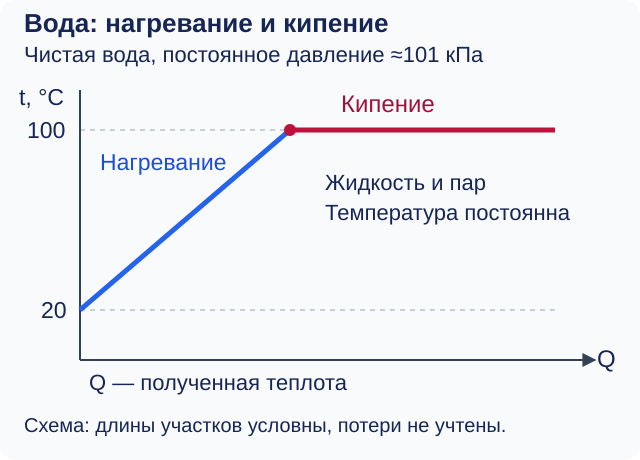

Решение задач на определение влажности воздуха
Два одинаковых сосуда могут содержать одинаковую массу водяного пара, но относительная влажность в них будет разной, если температуры различаются. Научимся вычислять влажность и повторим расчёты теплоты при нагревании, плавлении, кипении и сгорании топлива.
Как вычислить относительную влажность
Абсолютная влажность \(\rho\) показывает, какая масса водяного пара приходится на единицу объёма воздуха. Если масса пара \(m\) выражена в граммах, а объём \(V\) в кубических метрах, то \(\rho=m/V\) получается в \(\text{г/м}^3\).
| Температура, \(^\circ\text{C}\) | 10 | 15 | 20 | 25 |
|---|---|---|---|---|
| Плотность насыщенного пара, \(\text{г/м}^3\) | 9,4 | 12,8 | 17,3 | 23,0 |
Разобранные примеры
По массе пара и объёму
От массы к относительной влажности
В \(20\ \text{м}^3\) воздуха при \(20\,{}^\circ\text{C}\) содержится \(173\ \text{г}\) водяного пара. Сначала найдём плотность пара, затем сравним её с табличной.
По относительной влажности и объёму
От относительной влажности к массе
В сосуде объёмом \(2\ \text{м}^3\) при \(25\,{}^\circ\text{C}\) относительная влажность равна \(60\%\). Водяной пар имеет плотность \(0{,}60\cdot23{,}0=13{,}8\ \text{г/м}^3\). В двух кубических метрах его масса равна \(13{,}8\cdot2=27{,}6\ \text{г}\).
Итог. Абсолютную влажность находят по массе и объёму. Для относительной влажности сравнивают две плотности при одной температуре. При охлаждении воздуха в закрытом жёстком сосуде масса водяного пара сохраняется до начала конденсации, а плотность насыщенного пара уменьшается.
Задачи на влажность воздуха
- При \(20\,{}^\circ\text{C}\) в \(30\ \text{м}^3\) воздуха содержится \(363{,}3\ \text{г}\) водяного пара. Найди абсолютную и относительную влажность.
- При \(15\,{}^\circ\text{C}\) относительная влажность воздуха равна \(75\%\). Найди массу водяного пара в \(40\ \text{м}^3\) этого воздуха.
- В герметичном жёстком сосуде объёмом \(3\ \text{м}^3\) воздух при \(25\,{}^\circ\text{C}\) имеет относительную влажность \(50\%\). Сосуд медленно охлаждают до \(10\,{}^\circ\text{C}\). Выясни, начнётся ли конденсация к этому моменту, и при необходимости найди массу образовавшейся воды.
Задачи на тепловые явления
На графике показаны два этапа подвода теплоты к воде. Наклонный участок соответствует нагреванию, горизонтальный — кипению при постоянном давлении. Для каждого этапа количество теплоты рассчитывают отдельно.

- Воду массой \(350\ \text{г}\) нагрели с \(18\) до \(58\,{}^\circ\text{C}\). Сколько теплоты получила вода? Прими \(c=4200\ \text{Дж}/(\text{кг}\cdot{}^\circ\text{C})\).
- Лёд массой \(150\ \text{г}\) при \(0\,{}^\circ\text{C}\) полностью растаял. Затем полученную воду нагрели до \(20\,{}^\circ\text{C}\). Сколько теплоты потребовалось на каждом этапе и на весь процесс? Прими \(\lambda=3{,}3\cdot10^5\ \text{Дж/кг}\) и \(c=4200\ \text{Дж}/(\text{кг}\cdot{}^\circ\text{C})\).
- При нормальном атмосферном давлении \(250\ \text{г}\) воды нагрели с \(20\,{}^\circ\text{C}\) до кипения, а затем \(30\ \text{г}\) воды превратили в пар. Используй график, чтобы определить температуру перехода от нагревания к кипению. Найди суммарную теплоту и объясни, почему для двух этапов в расчёт входят разные массы. Прими \(c=4200\ \text{Дж}/(\text{кг}\cdot{}^\circ\text{C})\) и \(L=2{,}3\cdot10^6\ \text{Дж/кг}\). Теплопотерями и испарением до кипения пренебреги.
- Пар массой \(50\ \text{г}\) при \(100\,{}^\circ\text{C}\) полностью сконденсировался при той же температуре. Затем вода остыла до \(40\,{}^\circ\text{C}\). Сравни количества теплоты, выделившиеся на двух этапах. Прими \(L=2{,}3\cdot10^6\ \text{Дж/кг}\) и \(c=4200\ \text{Дж}/(\text{кг}\cdot{}^\circ\text{C})\).
- Сколько теплоты выделится при полном сгорании \(40\ \text{г}\) сухих дров? Какую массу воды можно было бы нагреть на \(50\,{}^\circ\text{C}\), если бы вся эта теплота передалась воде? Прими \(q=1{,}0\cdot10^7\ \text{Дж/кг}\) и \(c=4200\ \text{Дж}/(\text{кг}\cdot{}^\circ\text{C})\).